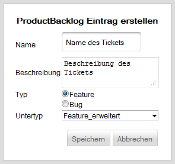
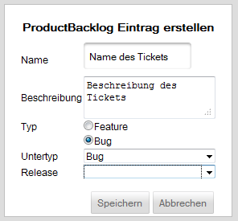

Product-Backlog-Item erstellen
Nach einem Klick auf den Button "Ticket erstellen" wird der folgende Dialog (oberes Bild) angezeigt, welcher sich nach Auswahl des Typs "Bug" geringfügig verändert (unteres Bild).

Bei der Erstellung eines Product-Backlog-Items muss zunächst der Name und eine Beschreibung angegeben werden.
Daraufhin muss der Typ gewählt werden, welcher entweder "Feature" oder "Bug" sein kann. Basierend auf dieser Auswahl werden daraufhin als Untertyp alle selbst erstellten Tickettypen angezeigt, welche auf einem Feature oder auf einem Bug basieren.

Bei der Auswahl eines Bugs muss weiterhin ein Release angegeben werden.
Created with the Personal Edition of HelpNDoc: Free help authoring environment